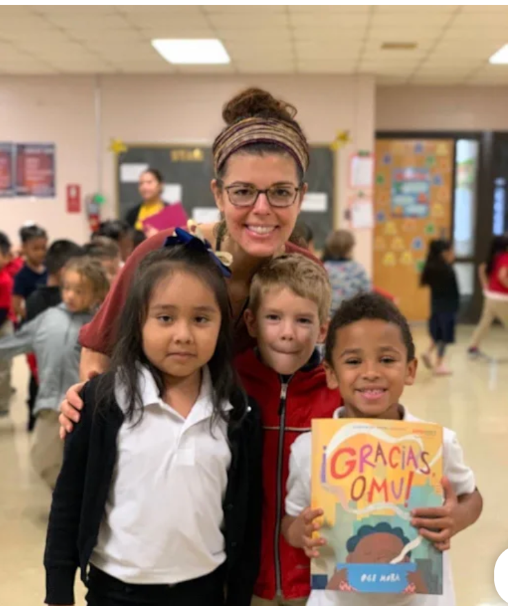

Treadwell is home to West Tennessee's only K–5 Spanish-English Dual Language Immersion Program.
Treadwell is home to over 750 PreK–5th Grade students; 200 are in the Dual Language Program. Shelby County students may apply for and attend Treadwell as part of the Optional Program even if their home address is outside the zone for TES.
A Spanish/English foundation for biliteracy begins in kindergarten. Each student must maintain satisfactory grades, conduct, and attendance to continue in the program each school year.
Dual Language Immersion provides an educational foundation of literacy and communication skills in two languages, incorporating multicultural views into grade-level curriculum and academic expectations.
Beginning in Kindergarten, core content is taught in a combination of English and Spanish. Instructional percentages shift by 10% each year.

All Dual Language classroom teachers and many of our school support staff are bilingual in Spanish and English and represent a variety of Spanish-speaking countries.
In each dual language classroom, students are both language models and language learners at any point in the day — all moving toward emerging bilingualism.
Interested in our Spanish-English Dual Language Immersion Program for your incoming Kindergarten student? Applications for our DL Optional Program open soon.
Apply online at scsk12.org/optional ↗Note: General MSCS kindergarten registration is a separate process from the Optional Program application. See the district website for general registration information.